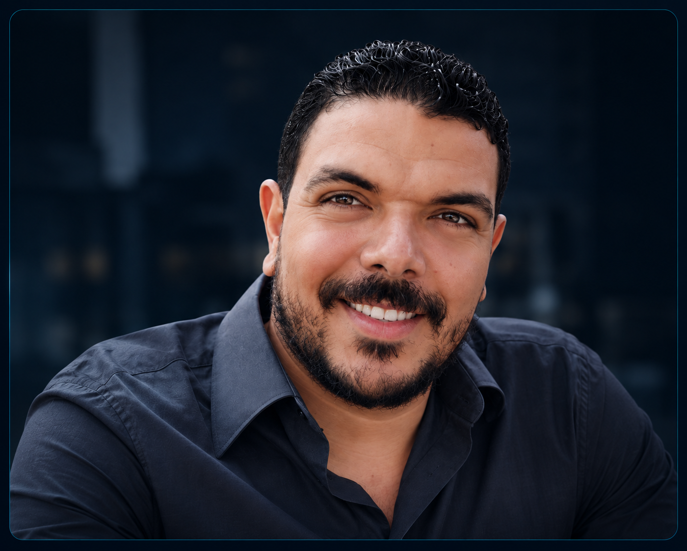

EN
EN FR
FR DE
DE ES
ES IT
IT ZH
ZH JA
JAالأمن السيبراني
تطبيق منهج أمني يركز على تقوية الأنظمة، وحماية الأجهزة الطرفية، ورفع مستوى الأمان في بيئات التشغيل.
مهندس حاسبات أعمل على بناء حلول تقنية تجمع بين الأمن السيبراني، والبنية التحتية لتقنية المعلومات، والأتمتة، وDevOps.
هندسة · تأمين · أتمتة · نشر

أنا مهندس حاسبات أركز على تصميم وبناء بيئات تقنية آمنة وموثوقة ومنظمة، مع اهتمام خاص بالأنظمة التي يمكن تشغيلها بكفاءة والحفاظ عليها وتطويرها على المدى الطويل.
يجمع عملي بين البنية التحتية لتقنية المعلومات، والأمن السيبراني، وهندسة الأنظمة، والأتمتة، وDevOps، مع التركيز على تحويل التحديات التقنية إلى حلول عملية قابلة للتطبيق والتحسين المستمر.
تطبيق منهج أمني يركز على تقوية الأنظمة، وحماية الأجهزة الطرفية، ورفع مستوى الأمان في بيئات التشغيل.
إدارة الأنظمة والشبكات والبنية التحتية المؤسسية مع التركيز على الاستقرار، والتنظيم، والموثوقية.
أتمتة المهام، وتنظيم عمليات النشر، واستخدام البرمجة النصية لتحسين الكفاءة وتقليل العمل المتكرر.
تصميم بيئات تقنية منظمة وقابلة للتوسع والصيانة، مع الاهتمام بالمعمارية والاعتمادية واستمرارية التشغيل.
أعمل على تقليل المهام المتكررة من خلال البرمجة النصية والأتمتة وسير العمل الموحّد، بما يرفع الكفاءة ويحد من الأخطاء الناتجة عن العمل اليدوي.
أتعامل مع الأمن باعتباره جزءًا أساسيًا من البنية التحتية وعمليات النشر والتشغيل، وليس خطوة تُضاف بعد اكتمال النظام.
أصمم الأنظمة بحيث تكون موثوقة وقابلة للتكرار والصيانة، مع التركيز على استقرار التشغيل وسهولة الإدارة والتطوير المستقبلي.
المركز القومي لإدارة المجال الجوي (NASMC)
العمل في مجالات البنية التحتية المؤسسية لتقنية المعلومات، وإدارة الأنظمة، والأتمتة، والعمليات التقنية، مع تركيز متزايد على الأمن السيبراني وممارسات DevOps.
جامعة القاهرة
تكوين هندسي يشمل أنظمة الحاسبات والبرمجيات والشبكات والبنية التحتية التقنية، مع أساس متكامل لفهم الأنظمة وتصميم الحلول التقنية.
مجموعة أدوات معيارية مبنية على PowerShell لتوحيد عمليات تجهيز الأجهزة ونشرها وتهيئتها، وتعزيز أمنها، وتوفير التطبيقات، والتحقق من النتائج، وإعداد التقارير.
إدارة البنية التحتية المؤسسية مع التركيز على Active Directory وGroup Policy وإدارة الأجهزة الطرفية وعمليات تشغيل الأنظمة بصورة منظمة.
تطبيق ضوابط أمنية عملية تركز على حماية الأجهزة الطرفية، وتقوية الأنظمة، وفرض السياسات، وتحسين مستوى الأمان في بيئات التشغيل.
إذا كان لديك مشروع أو فرصة مهنية أو ترغب في التواصل، يمكنك الوصول إليّ عبر أي من القنوات التالية.